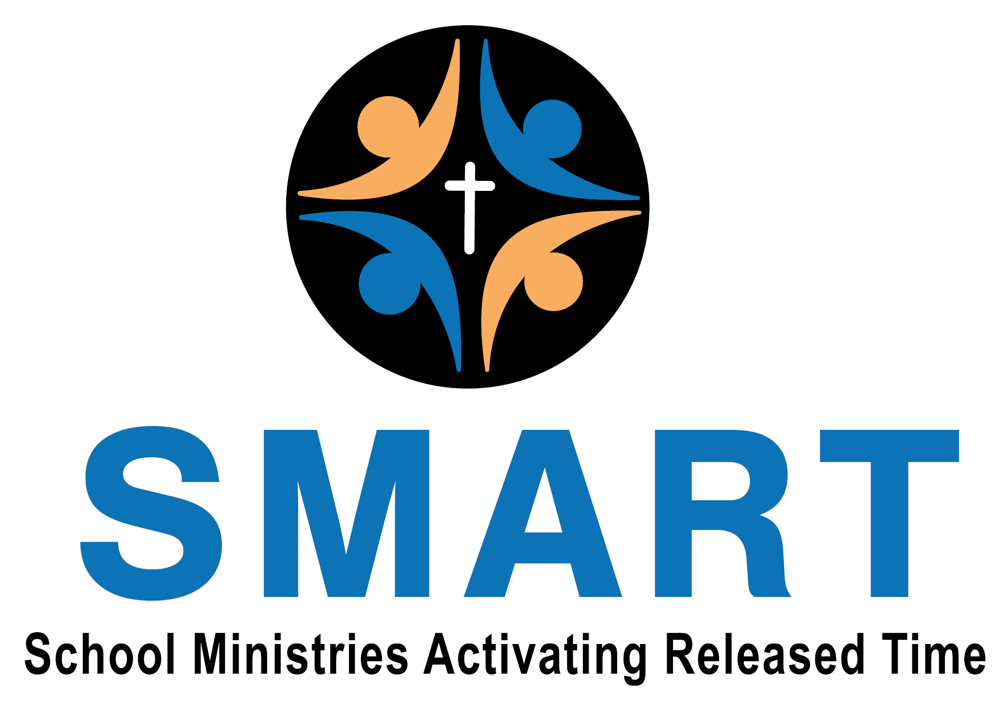

What Is Spartan SMART?
Spartan SMART is a community-based, faith-based released time Bible education outreach serving students in the Richmond Heights Local School District. With written parental permission, students are released during the school day to attend off-campus Bible instruction focused on faith development, character formation, and biblical understanding.
Spartan SMART is the local expression of the broader SMART ministry and is tailored specifically to the Richmond Heights community and school schedule.
Frequently Asked Questions
Who is eligible to participate?
Students enrolled in the Richmond Heights Local School District whose parents
or guardians provide written permission. The 2026 pilot program is for 5th and 6th grade
students. Registration can be completed online at
smartforneo.org/richmond-heights-student-registration
.
What curriculum is used?
Spartan SMART uses curriculum from Breakaway Ministries (Smithville), available at
breakawaysmithville.org/store
, which rotates on a three-year cycle. For the 2026 pilot program, students will be using
the book King of Kings.
When do classes take place?
Classes take place during the school day at scheduled times coordinated with the school.
The pilot program begins on February 20, 2026.
Where are classes held?
Spartan SMART operates in collaboration with local community churches. The 2026 pilot program
will take place at Christian Assembly, 25595 Chardon Road, Richmond Heights.
Who are the teachers and volunteers?
All teachers and volunteers are vetted and background checked. Teaching roles are filled by
individuals with significant teaching experience. Parents interested in volunteering may
register at
smartforneo.org/volunteer.
How are students transported?
Students are transported by trained leaders to nearby off-campus locations by van or bus.
About SMART
SMART is a nonprofit organization serving released time Bible education programs throughout Northeast Ohio.
SMART is an affiliate of the national Released Time Bible Education organization, School Ministries, and is guided by the state RTBE organization, School Ministries Ohio. SMART operates in accordance with Ohio Revised Code 3313.6022.
SMART is fully insured in all aspects of operation, including volunteers, leadership, and transportation.
Learn more at smartforneo.org.
Contact
For questions specific to the Spartan SMART program serving Richmond Heights, please email:
info@spartansmart.org